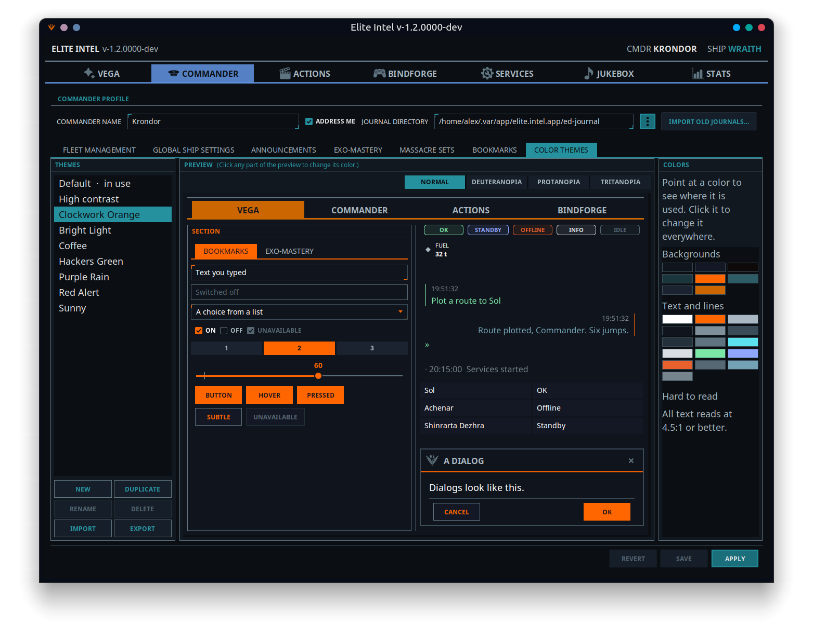
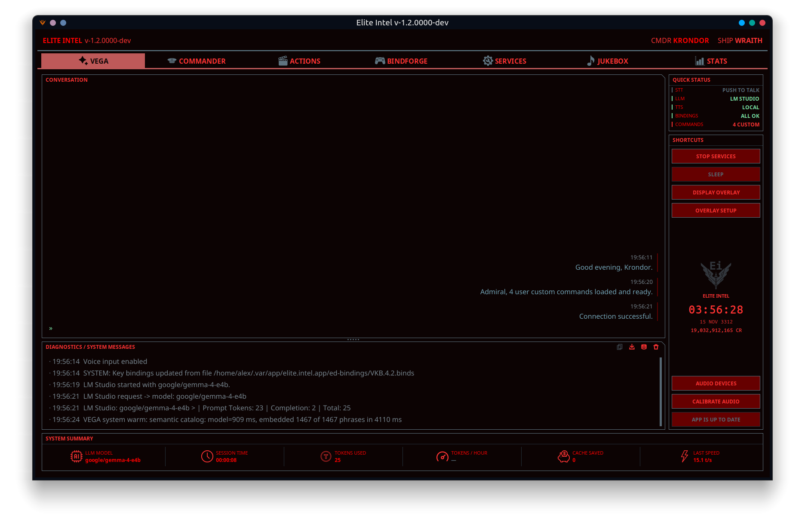

Color Themes
 Commander → Color Themes:
the colors the app window is drawn in. Pick one of the built-in themes, make your own, or download one below.
Commander → Color Themes:
the colors the app window is drawn in. Pick one of the built-in themes, make your own, or download one below.

The default colors are already tuned for color-blind commanders: the green, blue and red that mean OK, standby and danger stay apart for the common kinds of color blindness, and all text reads at 4.5:1 or better against its background. If they still don't suit your eyes or your screen, make your own.
The HUD overlay is not part of a theme. It has colors of its own, set in its own settings.
Built-in themes
- Default: the tuned colors described above.
- High contrast, for low vision or glare: black backgrounds, white text, brighter frames, and every text at 7:1 or better.
- Clockwork Orange: orange like the game's own HUD, and like the app before V1.2.
Built-in themes can't be changed: your first change to one goes into a copy.
Making your own
- Click any part of the preview to change its color. The preview is drawn by the app itself, so it looks exactly like the app will. If other parts share that color, you choose: Every part with that color, or Only this part.
- Point at a part of the preview, or at one of the Colors on the right, and everything else dims, so you can see where that color is used. Clicking a color changes it everywhere it is used.
- View as shows the preview as someone with deuteranopia, protanopia or tritanopia sees it, so you can check a theme before you share it.
- Hard to read lists any text your theme makes hard to read, with its contrast. Click one to fix it, or Fix all: the color is made just light or dark enough to read. It is only a warning: nothing stops you saving.
- Save keeps your changes. Apply saves and makes it the theme in use. The app reads its colors when it starts, so it offers to restart.
The buttons under the list are New, Duplicate, Rename and Delete, and Import and Export for sharing (below).
Your themes are kept with your app data, so Backup Settings & Data includes them.
Sharing themes
- Export writes the selected theme to a file you can share, exactly as it looks now, unsaved changes included.
- Import adds a theme somebody shared with you. If you already have a theme with that name, you choose: Replace it or Keep both.
Made one you like? Share it on Matrix.
Download more themes
Four more themes to try. Download one, then on Commander → Color Themes click Import, choose the file, and Apply. These are made for looks: unlike the Default theme, they are not tuned for color blindness.
Unzip it first: Import takes one theme file at a time.
Coffee

Warm browns and cream. ⬇ Coffee.json
Hackers Green

Green on black, like an old terminal. ⬇ Hackers-Green.json
Purple Rain

Violet on near-black. ⬇ Purple-Rain.json
Red Alert

Red on black. ⬇ Red-Alert.json
Community 👉Matrix👈